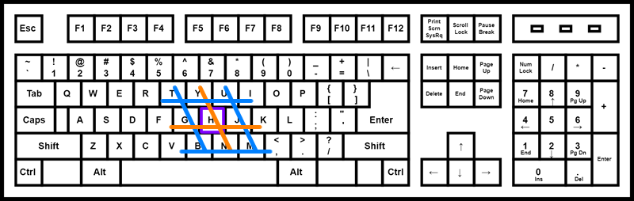
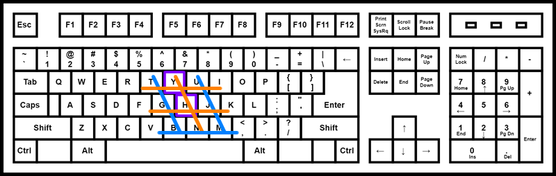
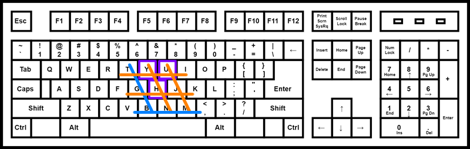
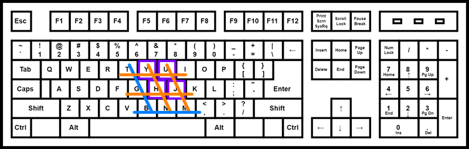

Tutorials for 2D games projects
Keyboard inputs are not detected when multiple keys are pressed at the same time
Your key bindings and triggers are working as expected when a single key or two keys are pressed at the same time. However, it doesn't work when you have three or more keys pressed. For example, moving diagonally with up and left cursor keys, while pressing space to fire at the same time. If this is the case, you have a cheap keyboard!
The solution is to use different key combinations or upgrade the keyboard!
High-end keyboards have "n-key rollover". This means that each key is sent completely independently by the keyboard hardware, so that each keypress is correctly detected regardless of how many other keys are being pressed or held down at the time. This is achieved using isolation diodes.
In order to save money, keyboard manufacturers often take an alternative approach by using a maxtrix of key switches instead of isolation diodes. The assumption is that the keyboard will only be used for simple applications where only a limited number of keys will be held down at any given time. This prevents multiple keys in the same region of the keyboard from being detected simultaneously. Sometimes it even prevents more than 2 keys at all from across the whole keyboard being detected at once. Often the shift, ctrl, and alt keys are not within this limitation, so you can hold shift and press 2 other keys at once and it will still work fine.
Here we can see H being pressed and detected by the matrix. This works:

Here we can see H and Y being pressed and detected by the matrix. This works:

Here we can see H, Y and U being pressed and detected by the matrix. This works:

Here we can see H, Y, U and J being pressed. This does not work because it is the same pattern as H, Y and U:

For the user to get the benefit of the full n-key rollover, the complete key press status must be transmitted to the computer. When the data is sent via the USB protocol, there are two operating modes: Human Interface Device (HID) "report protocol" and "boot protocol". The (optional) boot protocol, which is solely used by very limited USB host implementations such as BIOS, is limited to 8 modifier keys (left and right versions of Ctrl, Shift, Alt, and Win), followed by maximum 6 key codes. This will limit the number of simultaneous key presses that can be reported. The (mandatory) HID report protocol, which is what operating systems use, imposes no restrictions and supports full n-key rollover. The HID specification however imposes no requirements on rollover and low-end keyboards may impose the same restrictions regardless of whether the boot protocol or the HID report protocol is used.
 Craig'n'Dave | Version 1.3
Craig'n'Dave | Version 1.3